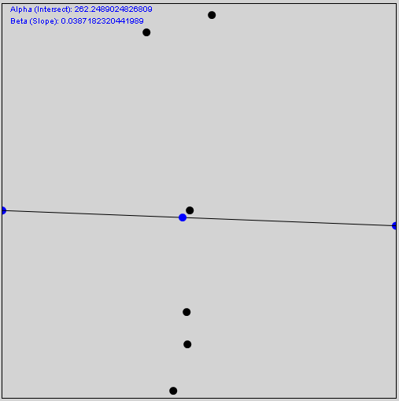

The simple linear regression algorithm is a closed-form solution to a least-squared distance minimization problem. Here, I demonstrate the 2-dimensional case of simple linear regression.
What makes this form of regression 'simple', is the fact that the least-squared distance is only the vertical distance to the line. If we don't consider there to be any difference between the axes (i.e. neither is dependent or independent), then this is an incorrect regression.
The better method minimizes the actual least-squared Euclidean distance between each point and our linear estimation. It has a much more complicated closed-form solution. This is called the "Deming regression" in some contexts.
There are many situations in which it gives an obviously incorrect fit - and these situations are not difficult to find using this tool. Nonetheless, the "vertical" least-squared error method is common in many domains. For complicated regression problems, that simplification can mean the difference between a closed form solution existing or not. I display such a case below:
